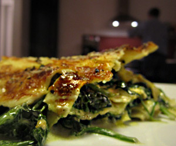

Spinatlasagne
5 von 61 kg spinat kurz in kochendem wasser blanchieren. danach mit zwiebeln und knoblauch andämpfen.
in einer pfanne 5 dl rahm und 250 g mascarpone aufkochen. kräftig würzen. in einer gartinform schichten.
bei ca 200 grad 20 minuten gratinieren.
